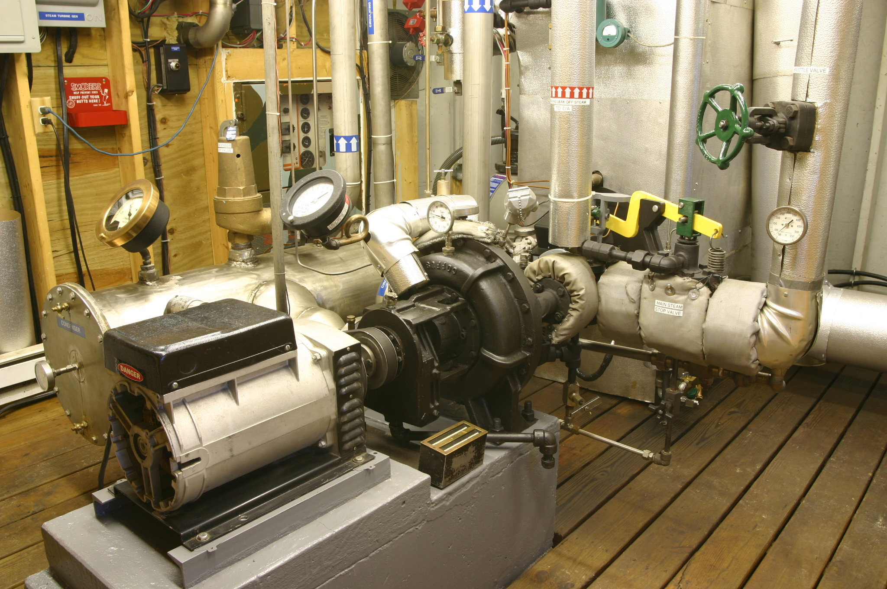

Powerhouse LP Turbine Addition
Estimated Summer 2021
Improving steam efficiency with compounding turbines

At my house, we have a small 12kW powerhouse where we generate electricity through a traditional rankine cycle. The current setup uses superheated steam to drive a small 15hp turbine at 6400RPM. This is then connected to a single-phase generator through a belt-drive down to 3600 RPM. The steam exhausts from this turbine to the condensor and the water goes back to the boiler.
Using just a single turbine in this application makes for very inefficient use of steam, because the single turbine must cover the whole pressure drop (it does have 3 stages internally, but this is not enough). So, to improve the steam efficiency, we have a much larger 75hp turbine (already 3600 rpm) that we will use as a LP turbine in a compound turbine arrangement. In a compound system, steam will exhaust from the existing turbine into the new LP turbine before going to the condensor. This will require the LP turbine to be renozzled, because it's nozzles are designed for 75hp worth of steam flow, which we cannot provide with our boiler. We are limited by the amount of steam we can generate, so the new turbine will only increase capacity via increasing the efficiency.